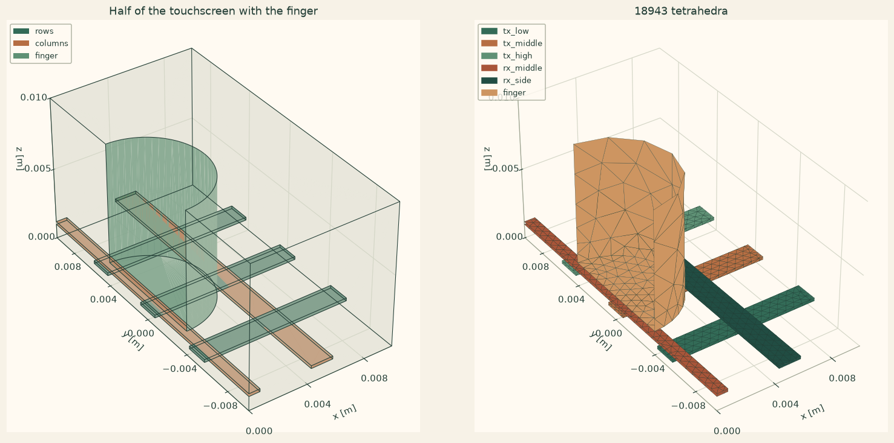

Docs › Examples › Capacitance matrix of a touchscreen with and without a finger
Electrostatics · 3D
Capacitance matrix of a touchscreen with and without a finger
A projected-capacitive touchscreen with three rows and three columns, with and without a finger on the glass.
Run locally with OneSimulation. The example downloads are free. Running them requires an activated runtime. Runtime Alpha 0.2.1a7 · CPython 3.13 on macOS (Apple Silicon), Ubuntu 22.04 (x86-64), and Windows x64. Installation and activation · View pilot plans. Scope of the reference checks.

What it computes
OneSimulation reads half of the electrode stack, the substrate and glass layers and the finger from STEP files, embeds the layers in one tetrahedral mesh and solves the 3D Poisson equation with quadratic elements and region-wise permittivity for each driven row; the charges on all electrodes give the mutual capacitances. The script that builds the STEP file comes with the notebook.
What it checks
The middle crossing has 0.858 pF without the finger (2.2 times the parallel-plate value of 0.398 pF because of fringing); the finger lowers it by 18.3 %, the neighbouring crossings by 6.1 % and 8.4 % and the diagonal ones by 1.5 %; the matrix is reciprocal to 1e-15.
Geometry
The notebook starts at the import of the CAD files touchscreen_capacitance_matrix.step, touchscreen_capacitance_matrix_finger.step, touchscreen_capacitance_matrix_glass.step, touchscreen_capacitance_matrix_substrate.step: STEP (AP242), readable by any CAD program, with the names of the faces that the boundary conditions use. Put them next to the notebook.

The geometry script
The script touchscreen_capacitance_matrix_geometry.py builds the geometry with the CAD objects of OneSimulation and writes the files. Change a dimension there, run it, and run the notebook again.
"""Geometry of the OneSimulation example "Capacitance matrix of a touchscreen with and without a finger".
Builds one half of a small projected-capacitive touchscreen with the CAD objects of OneSimulation.
Three transmit rows (along x, at y = -5, 0 and 5 mm) lie in a polymer substrate (0 to 1.2 mm above
the grounded display shield), three receive columns (along y, at x = -5, 0 and 5 mm) on top of it,
under a 0.5 mm cover glass. The electrodes are 1.5 mm wide and 0.2 mm thick, rows and columns 0.2 mm
apart, and run across the whole modelled area. A finger (a grounded cylinder of 4 mm radius) can rest on the glass above the middle
crossing. The touchscreen is mirror-symmetric about the plane x = 0; the half x > 0 is modelled.
Files: touchscreen_capacitance_matrix.step (without finger) and touchscreen_capacitance_matrix_finger.step
hold the air and dielectrics with the electrodes (and the finger) cut out, with the face groups
tx_low, tx_middle, tx_high (rows at y = -5, 0, 5 mm), rx_middle, rx_side (columns at x = 0 and
5 mm), finger, shield, symmetry and outer; touchscreen_capacitance_matrix_substrate.step and
touchscreen_capacitance_matrix_glass.step hold the two dielectric layers.
"""
from onesim.cad.d3 import Box, Cylinder
mm = 1e-3
half_x, half_y, top, substrate, glass = 10 * mm, 10 * mm, 10 * mm, 1.2 * mm, 1.7 * mm
width, thickness, strip = 1.5 * mm, 0.2 * mm, 10 * mm
rows = {
name: Box(
length=strip,
width=width,
height=thickness,
origin=(0.0, y - width / 2, 0.6 * mm),
)
for name, y in (("tx_low", -5 * mm), ("tx_middle", 0.0), ("tx_high", 5 * mm))
}
columns = {
"rx_middle": Box(
length=width / 2,
width=2 * strip,
height=thickness,
origin=(0.0, -strip, substrate - thickness),
),
"rx_side": Box(
length=width,
width=2 * strip,
height=thickness,
origin=(5 * mm - width / 2, -strip, substrate - thickness),
),
}
electrodes = {**rows, **columns}
finger = Cylinder(radius=4 * mm, length=top - glass, origin=(0.0, 0.0, glass))
for name, cut in (
("touchscreen_capacitance_matrix.step", None),
("touchscreen_capacitance_matrix_finger.step", finger),
):
region = Box(
length=half_x, width=2 * half_y, height=top, origin=(0.0, -half_y, 0.0)
).named("box")
for electrode, body in electrodes.items():
region = region - body.named(electrode)
if cut is not None:
region = region - cut.named("finger")
faces = region.boundaries
groups = {
electrode: region.select(
faces=lambda face, electrode=electrode: face.id.startswith(electrode + ".")
)
for electrode in electrodes
}
if cut is not None:
groups["finger"] = region.select(
faces=lambda face: face.id.startswith("finger.")
)
region.grouped(
**groups,
shield=faces["box.z_min"],
symmetry=faces["box.x_min"],
outer=faces["box.x_max"]
| faces["box.y_min"]
| faces["box.y_max"]
| faces["box.z_max"],
).save(name)
layers = {
"substrate": Box(
length=half_x, width=2 * half_y, height=substrate, origin=(0.0, -half_y, 0.0)
),
"glass": Box(
length=half_x,
width=2 * half_y,
height=glass - substrate,
origin=(0.0, -half_y, substrate),
),
}
for name, layer in layers.items():
for body in electrodes.values():
layer = layer - body
layer.save(f"touchscreen_capacitance_matrix_{name}.step")The notebook
The complete notebook, cell by cell. Run it to produce the figures and the comparison printout.
A projected-capacitive touchscreen has transmit electrodes (rows) and receive electrodes (columns) that cross each other in two layers. The controller drives one row at a time and measures the charge that flows into each column: the mutual capacitance \(C_{ij}=Q_j/V_i\) of every crossing. A finger above a crossing takes over part of the field lines that would end on the column and lowers its mutual capacitance; the drop locates the touch.
The model has three rows (at \(y=-5\), 0 and 5 mm) and three columns (at \(x=-5\), 0 and 5 mm), 1.5 mm wide and 0.2 mm thick, 0.2 mm apart, embedded in a polymer substrate (\(\varepsilon_r=4\)) on a grounded display shield and covered by 0.5 mm of glass (\(\varepsilon_r=7\)). The strips run across the whole modelled area of 20 mm × 20 mm, whose side faces carry no charge. The finger is a grounded conductor of 4 mm radius resting on the glass above the middle crossing. OneSimulation solves \(-\nabla\cdot(\varepsilon\nabla V)=0\) with the driven row at 1 V and every other electrode grounded; the charge of each electrode is the reaction of the potential on its faces.
The touchscreen is mirror-symmetric about the plane \(x=0\), so half of it is modelled. The air and the dielectrics with the electrodes cut out come from touchscreen_capacitance_matrix.step and, with the finger, from touchscreen_capacitance_matrix_finger.step; the face groups are tx_low, tx_middle, tx_high, rx_middle, rx_side, finger, shield, symmetry and outer. The two dielectric layers come from touchscreen_capacitance_matrix_substrate.step and touchscreen_capacitance_matrix_glass.step. The script touchscreen_capacitance_matrix_geometry.py builds all four with the CAD objects of OneSimulation.
| faces | condition | |---|---| | driven row | \(V=1\) V | | other rows, columns, finger, shield | \(V=0\) | | symmetry (the plane \(x=0\)), outer | \(\mathbf D\cdot\mathbf n=0\) |
Reference. A crossing is a small parallel-plate capacitor of the overlap area \(w^2\) and the gap \(d\) between row and column, \(C\approx\varepsilon_0\varepsilon_rw^2/d\); the fringing field around the edges adds to it. The Maxwell capacitance matrix is symmetric (reciprocity), which the charges of the two driven rows on each other must show. The sensing principle follows T. Gray, Projected Capacitive Touch, Springer 2019.
import numpy as np
from onesim.cad.d2 import Plane
from onesim.cad.exchange import load
from onesim.materials import VacuumPermittivity
from onesim.meshing import LocalRefinement, TetrahedralMesher
from onesim.numerics import Numerics
from onesim.numerics.fem import FiniteElement, Lagrange
from onesim.numerics.linear import SparseDirect
from onesim.physics.electrostatics import (
FixedPotential,
PoissonEquation,
ZeroNormalElectricDisplacement,
)
from onesim.simulation import Problem, Simulation, regionwise
from onesim.visualization import plots, theme
theme.set()Geometry and mesh
load returns the two variants and the dielectric layers. The layers are embedded in the mesh, the cells are fine on the electrodes and in the stack and grow upwards into the air.
regions = {
"without finger": load("touchscreen_capacitance_matrix.step"),
"with finger": load("touchscreen_capacitance_matrix_finger.step"),
}
substrate, glass = load("touchscreen_capacitance_matrix_substrate.step"), load(
"touchscreen_capacitance_matrix_glass.step"
)
electrodes = ("tx_low", "tx_middle", "tx_high", "rx_middle", "rx_side")
meshes = {
label: TetrahedralMesher(
target_size=0.002,
embedded_regions=(substrate, glass),
refinements=(
LocalRefinement(region=substrate, target_size=0.0006),
LocalRefinement(region=glass, target_size=0.0008),
LocalRefinement(
region=air.select(
faces=lambda face: face.id.split(".")[0] in electrodes
),
target_size=0.0004,
),
),
).generate(air)
for label, air in regions.items()
}
air = regions["with finger"]
view = plots.Camera(elevation=35, azimuth=-125)
fig = plots.figure(1, 2, size=(14, 6.5))
plots.geometry(
air,
selection={
"rows": air.boundaries.tx_low
| air.boundaries.tx_middle
| air.boundaries.tx_high,
"columns": air.boundaries.rx_middle | air.boundaries.rx_side,
"finger": air.boundaries.finger,
},
labels=False,
camera=view,
title="Half of the touchscreen with the finger",
ax=fig[0],
)
plots.mesh(
meshes["with finger"],
groups=("tx_low", "tx_middle", "tx_high", "rx_middle", "rx_side", "finger"),
camera=view,
title=f"{meshes['with finger'].cell_count} tetrahedra",
ax=fig[1],
)
plots.show()Model
The substrate and the glass get their permittivities from regionwise. The middle row and the lower row are driven in turn; the upper row follows from the lower one by symmetry. The factor two restores the full charge of the electrodes cut by the symmetry plane.
eps0 = float(VacuumPermittivity().evaluate())
layer = lambda low, high: lambda points: (points[:, 2] > low) & (points[:, 2] < high)
permittivity = regionwise(
((layer(0.0, 0.0012), 4.0 * eps0), (layer(0.0012, 0.0017), 7.0 * eps0)),
default=eps0,
unit="F/m",
)
numerics = Numerics(
spatial=FiniteElement(element=Lagrange(order=2)), linear_solver=SparseDirect()
)
whole = {
"tx_low": 2,
"tx_middle": 2,
"tx_high": 2,
"rx_middle": 2,
"rx_side": 1,
"finger": 2,
}
def charges(label, driven):
"""Charges of all electrodes (full touchscreen) with one row at 1 V, and the solved potential."""
air = regions[label]
grounded = [
name
for name in (*electrodes, "finger")
if name != driven and name in air.boundary_groups()
]
model = PoissonEquation(
domain=air.volume, permittivity=permittivity, charge_density=0.0
)
problem = Problem(
name="Touchscreen",
geometry=air,
physics=(model,),
boundary_conditions=(
FixedPotential(boundary=air.boundaries[driven], physics=model, value=1.0),
FixedPotential(boundary=air.boundaries.shield, physics=model, value=0.0),
*(
FixedPotential(boundary=air.boundaries[name], physics=model, value=0.0)
for name in grounded
),
ZeroNormalElectricDisplacement(
boundary=air.boundaries.symmetry | air.boundaries.outer, physics=model
),
),
)
potential = (
Simulation(problem=problem, mesh=meshes[label], numerics=numerics)
.solve_stationary()
.field(model.potential)
)
return {
name: whole[name] * potential.reaction(air.boundaries[name])
for name in (*electrodes, "finger")
if name in air.boundary_groups()
}, potential
runs = {
(label, row): charges(label, row)
for label in regions
for row in ("tx_middle", "tx_low")
}Results
The mutual capacitances between the three rows and the three columns, the drop caused by the finger, reciprocity and the parallel-plate value of one crossing.
mutual = {
label: np.array(
[
[
-runs[label, row][0][column]
for column in ("rx_side", "rx_middle", "rx_side")
]
for row in ("tx_low", "tx_middle", "tx_low")
]
)
for label in regions
}
print("mutual capacitance row -> column [pF], columns at x = -5, 0, 5 mm")
for label, matrix in mutual.items():
print(f"{label}:")
for row, values in zip(("y = -5 mm", "y = 0 mm", "y = +5 mm"), matrix):
print(f" row {row}: " + " ".join(f"{1e12 * value:7.4f}" for value in values))
drop = 100 * (1 - mutual["with finger"] / mutual["without finger"])
print(
"drop by the finger [%]:\n"
+ "\n".join(" " + " ".join(f"{value:7.2f}" for value in row) for row in drop)
)
for label in regions:
forward, backward = (
runs[label, "tx_middle"][0]["tx_low"],
runs[label, "tx_low"][0]["tx_middle"],
)
total = sum(runs[label, "tx_middle"][0].values())
print(
f"{label}: reciprocity C(middle row, lower row) / C(lower row, middle row) - 1 = {forward / backward - 1:+.1e}; "
f"charge on the driven row {1e12 * runs[label, 'tx_middle'][0]['tx_middle']:.4f} pF, induced on the electrodes "
f"{-1e12 * (total - runs[label, 'tx_middle'][0]['tx_middle']):.4f} pF, rest on the shield"
)
plate = eps0 * 4.0 * 0.0015**2 / 0.0002
print(
f"parallel-plate value of one crossing: {1e12 * plate:.4f} pF; computed middle crossing {1e12 * mutual['without finger'][1, 1]:.4f} pF "
f"({100 * (mutual['without finger'][1, 1] / plate - 1):+.1f} % from fringing)"
)Figure
The potential in the plane \(y=0\) through the middle row with the finger, and the mutual capacitances of the middle row to the three columns.
fig = plots.figure(1, 2, size=(16, 6))
plots.section(
runs["with finger", "tx_middle"][1],
plane=Plane(origin=(0.0, 1e-6, 0.0), normal=(0.0, 1.0, 0.0)),
limits=(0.0, 1.0),
contours=21,
subdivisions=2,
symmetry={"planes": [((1, 0, 0), (0, 0, 0))]},
label="potential [V]",
title="Middle row at 1 V, finger above",
xlimits=(-0.008, 0.008),
ylimits=(0.0, 0.004),
xlabel="x [m]",
ylabel="z [m]",
ax=fig[0],
)
plots.bars(
["column x = -5 mm", "column x = 0", "column x = +5 mm"],
{label: 1e12 * mutual[label][1] for label in regions},
ylabel="mutual capacitance to the middle row [pF]",
title="Touch signal",
ax=fig[1],
)
plots.show()Going further
Lift the finger off the glass or move it towards a neighbouring crossing in touchscreen_capacitance_matrix_geometry.py and write the STEP files again; make the glass thicker to see how the touch signal fades; or drive the columns as well to obtain the full Maxwell capacitance matrix including the self-capacitance seen by a self-capacitive controller.